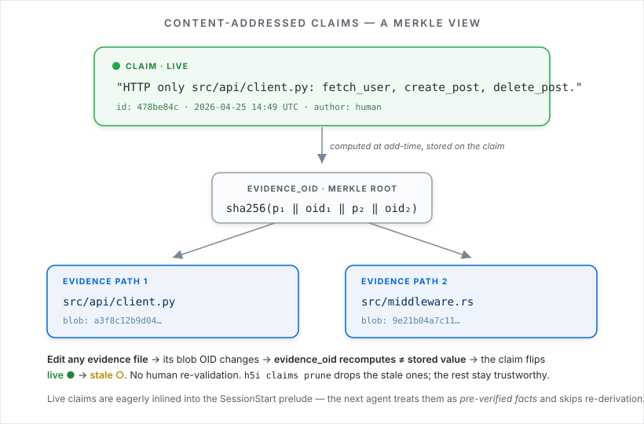

Content-Addressed Claims: Reusable Facts for AI Coding Agents
Agents waste time re-learning facts the previous session already proved. h5i claims turn those facts into reusable, evidence-backed context that stays live until the backing files change.
Every agent session starts with a cold-start tax. The agent reads files, searches names, discovers which module owns a concern, rejects a few wrong paths, and finally builds enough local understanding to make a change. The next session often repeats the same work.
h5i claims are a small primitive for avoiding that loop. A claim is a concise fact about the codebase plus the minimum set of files that make the fact true. h5i pins the evidence to the file blobs at HEAD. If any evidence file changes, the claim becomes stale automatically.

What a good claim looks like
A claim should be useful, compact, and grounded. It should save a future session real discovery work.
$ h5i capture claim \ "HTTP only src/api/client.py: fetch_user, create_post, delete_post" \ --path src/api/client.py $ h5i recall claims --group-by-path
The evidence path matters. Do not cite every file the agent happened to read. Cite the files that, if changed, would force the claim to be re-checked. Most useful claims cite one file. More than three is usually a smell.
Live until the evidence changes
Claims are not permanent lore. They are content-addressed facts. h5i records the path and blob identity of each evidence file. When the file changes, the claim no longer matches current HEAD and is shown as stale.
| Status | Meaning | Agent behavior |
|---|---|---|
| live | Evidence blobs still match. | Use as pre-verified context. |
| stale | At least one evidence file changed. | Re-check before relying on it. |
| pruned | Stale claim removed. | No longer appears in context. |
Why this helps context windows
Prompt caching helps when you send the same tokens repeatedly. Claims attack a different cost: re-derivation. Instead of asking the agent to read five files to rediscover "auth middleware owns token refresh," the next session can receive that fact directly, with evidence attached.
The existing h5i benchmark for claims measured a large reduction in file reads and cache-read tokens on a repeated task. The important product lesson is simpler than the exact number: durable, invalidatable facts are more useful than dumping larger transcripts into every session.
What to claim
- Ownership:
src/session.rs owns refresh-token persistence. - Exclusions:
billing code does not call Stripe directly; gateway only. - Invariants:
session token compare must stay constant-time. - API orientation: exported functions, important types, and side effects.
- Where not to look: the module that seems relevant but is not.
Do not claim trivia a quick search answers. Do not claim opinions. Do not write a paragraph when a compact sentence would do. Claims are read often, so every word costs repeatedly.
How claims fit the bigger h5i model
Claims are one piece of shared context. The context DAG records the path of the work. Commits record prompt, model, test, and decision provenance. Memory snapshots record agent-local state. Claims record reusable facts that should survive beyond one session, but only while the evidence is still current.
Start small. Add claims after the agent establishes something non-obvious that the next agent would otherwise have to re-learn. Over time, the codebase becomes easier for both humans and agents to re-enter.